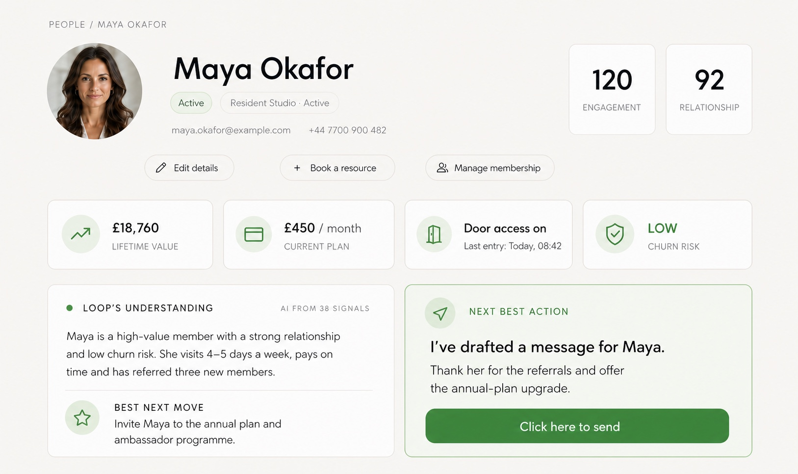

01 — An AI-native CRM
I replaced 12 tools with one CRM.
This is what we built when we decided a CRM should be AI-native.
A CRM for subscription and repeat-customer businesses isn’t HubSpot, and it isn’t Salesforce. Those tell you what to do. Loop does it for you — it watches the signals your business already produces, notices who needs attention today, and drafts the personal message you’d send if you had the time.
Fifteen years selling, and I’ve used every CRM in the business. Loop is the first one I know actually adds value — we built it from the ground up, with Claude and other AI models at its heart, alongside the four businesses that have run on it for the last four months. It replaced the 12 software tools I used to pay for.
- Before
- A CRM that tells you what to do.
- After
- A CRM that does it — you approve, one at a time.
If your business has repeat customers — members, subscribers, regulars — Loop starts from free.
Get Loop — start free →